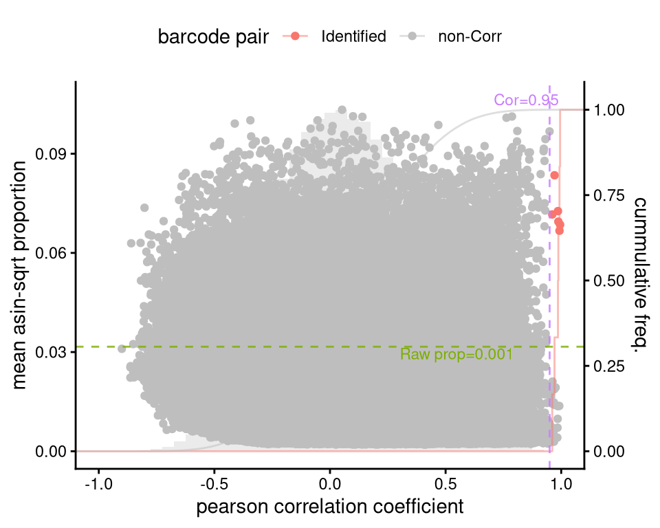
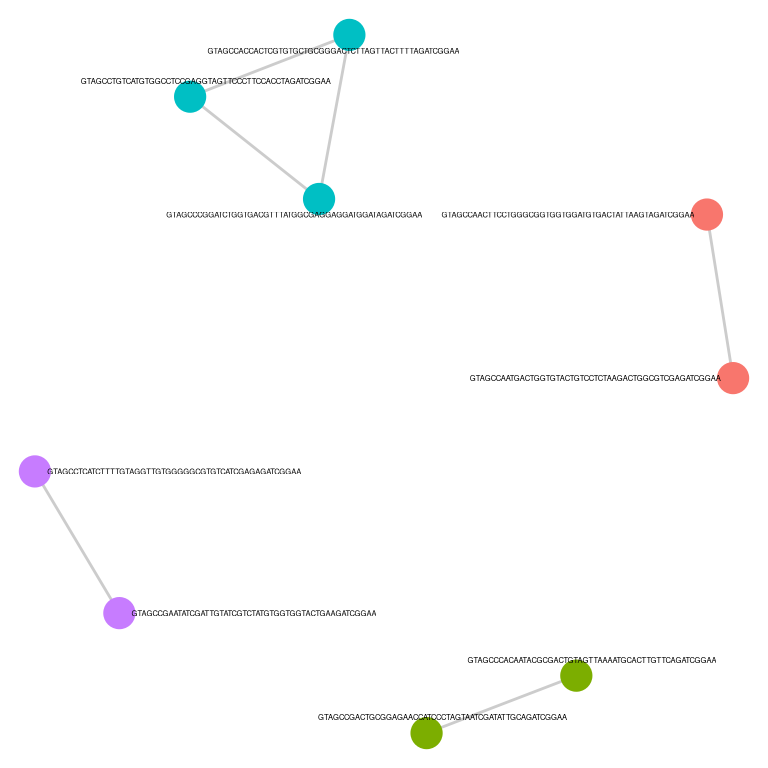
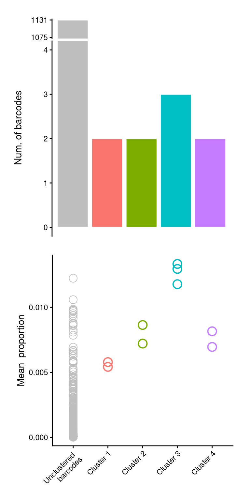
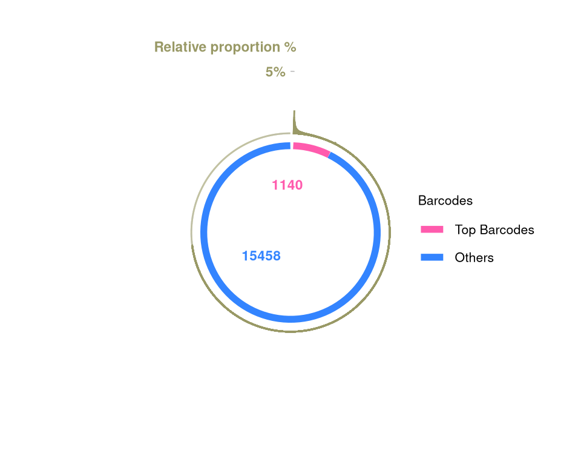
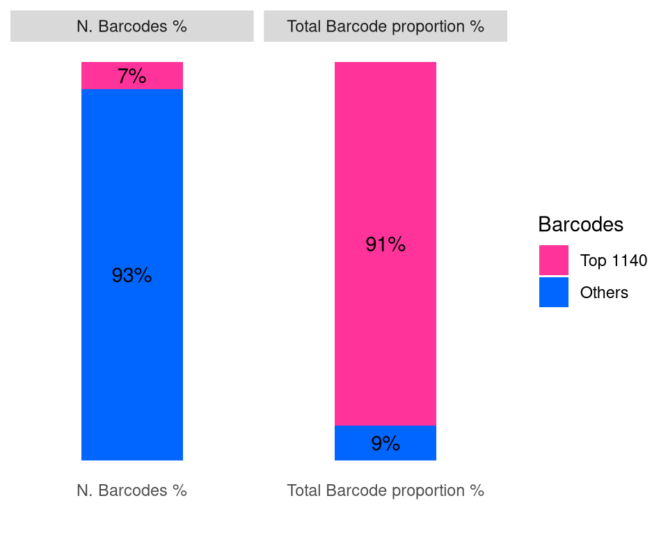
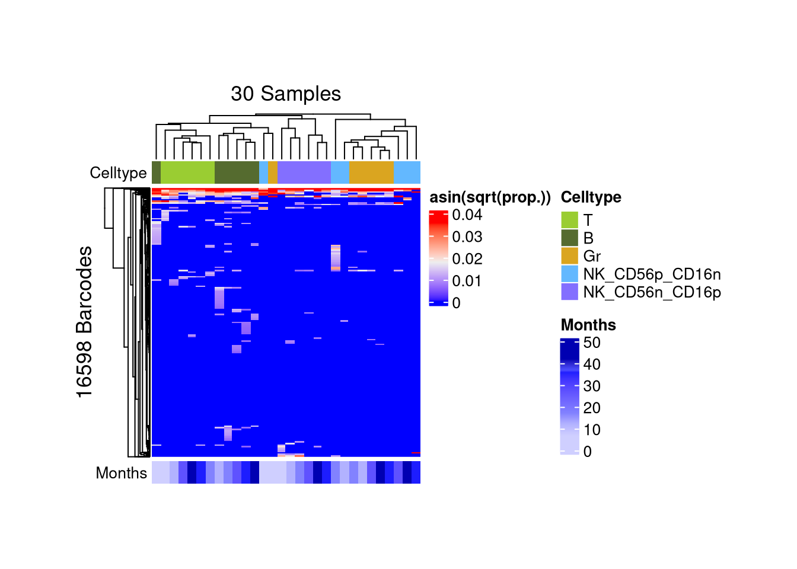
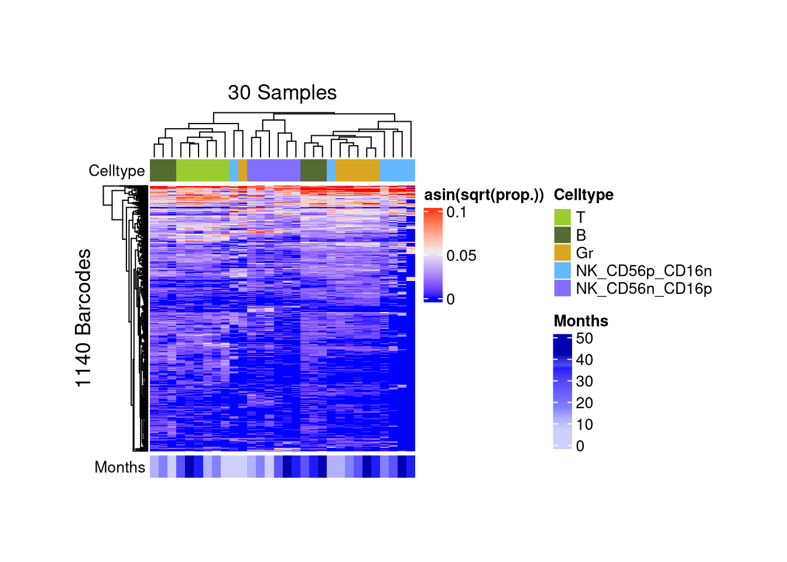

Monkey HSPC datasetInitiated: 2025-09-07
Rendered: 2025-10-16
Last updated: 2025-10-16
Checks: 5 2
Knit directory: public_barcode_count/
This reproducible R Markdown analysis was created with workflowr (version 1.7.2). The Checks tab describes the reproducibility checks that were applied when the results were created. The Past versions tab lists the development history.
The R Markdown file has unstaged changes. To know which version of
the R Markdown file created these results, you’ll want to first commit
it to the Git repo. If you’re still working on the analysis, you can
ignore this warning. When you’re finished, you can run
wflow_publish to commit the R Markdown file and build the
HTML.
The global environment had objects present when the code in the R
Markdown file was run. These objects can affect the analysis in your R
Markdown file in unknown ways. For reproduciblity it’s best to always
run the code in an empty environment. Use wflow_publish or
wflow_build to ensure that the code is always run in an
empty environment.
The following objects were defined in the global environment when these results were created:
| Name | Class | Size |
|---|---|---|
| module | function | 5.6 Kb |
The command set.seed(20250112) was run prior to running
the code in the R Markdown file. Setting a seed ensures that any results
that rely on randomness, e.g. subsampling or permutations, are
reproducible.
Great job! Recording the operating system, R version, and package versions is critical for reproducibility.
Nice! There were no cached chunks for this analysis, so you can be confident that you successfully produced the results during this run.
Great job! Using relative paths to the files within your workflowr project makes it easier to run your code on other machines.
Great! You are using Git for version control. Tracking code development and connecting the code version to the results is critical for reproducibility.
The results in this page were generated with repository version c2766f9. See the Past versions tab to see a history of the changes made to the R Markdown and HTML files.
Note that you need to be careful to ensure that all relevant files for
the analysis have been committed to Git prior to generating the results
(you can use wflow_publish or
wflow_git_commit). workflowr only checks the R Markdown
file, but you know if there are other scripts or data files that it
depends on. Below is the status of the Git repository when the results
were generated:
Ignored files:
Ignored: .RData
Ignored: .Rhistory
Ignored: .Rproj.user/
Ignored: output/f2.png
Ignored: public_barcode_count.Rproj
Untracked files:
Untracked: analysis/styles.css
Untracked: output/f4a_schematic.jpeg
Untracked: output/monkeyHSPC_barbieQ.rda
Unstaged changes:
Modified: analysis/_site.yml
Modified: analysis/barbieQ_paper_Figure2.Rmd
Modified: analysis/barbieQ_paper_Figure4.Rmd
Note that any generated files, e.g. HTML, png, CSS, etc., are not included in this status report because it is ok for generated content to have uncommitted changes.
These are the previous versions of the repository in which changes were
made to the R Markdown (analysis/barbieQ_paper_Figure2.Rmd)
and HTML (docs/barbieQ_paper_Figure2.html) files. If you’ve
configured a remote Git repository (see ?wflow_git_remote),
click on the hyperlinks in the table below to view the files as they
were in that past version.
| File | Version | Author | Date | Message |
|---|---|---|---|---|
| Rmd | c2766f9 | Liyang Fei | 2025-10-07 | remake figures |
Linked to Preprocessing analyses of all datasets in the barbieQ paper:
library(readxl)
library(magrittr)
library(dplyr)
library(tidyr) # for pivot_longer
library(tibble) # for rownames_to _column
library(knitr) # for kable()
library(data.table) # for data.table()
library(SummarizedExperiment)
library(S4Vectors)
library(ggplot2)
library(ggbreak)
library(patchwork)
library(scales)
library(ggVennDiagram)
library(ComplexHeatmap)barbieQInstalling the latest devel version of barbieQ from
GitHub.
if (!requireNamespace("barbieQ", quietly = TRUE)) {
remotes::install_github("Oshlack/barbieQ")
}Warning: replacing previous import 'data.table::first' by 'dplyr::first' when
loading 'barbieQ'Warning: replacing previous import 'data.table::last' by 'dplyr::last' when
loading 'barbieQ'Warning: replacing previous import 'data.table::between' by 'dplyr::between'
when loading 'barbieQ'Warning: replacing previous import 'dplyr::as_data_frame' by
'igraph::as_data_frame' when loading 'barbieQ'Warning: replacing previous import 'dplyr::groups' by 'igraph::groups' when
loading 'barbieQ'Warning: replacing previous import 'dplyr::union' by 'igraph::union' when
loading 'barbieQ'library(barbieQ)Check the version of barbieQ.
packageVersion("barbieQ")[1] '1.1.3'set.seed(2025)
getwd()[1] "/home/lfei/public_barcode_count"The data was downloaded from barcodetrackRData repository on GitHub. The experiment was described in Wu, Chuanfeng, et al. “Clonal expansion and compartmentalized maintenance of rhesus macaque NK cell subsets.” Science Immunology (2018).
Load barcode count matrix. Check barcode sequence: pass.
## data is separated by "\t". so we use `read.table()` for loading data.
count <- read.table("data/WuC/monkey_ZG66.txt", header = TRUE, sep = "\t", row.names = 1)
## rownames are barcode sequence, basically consist of ATGCs: "^[ATGC]+$"
## check patterns of rownames
lapply(rownames(count), function(x) grepl("^[ATGC]+$", x)) %>% unlist() %>% table().
FALSE TRUE
6 16597 ## print untypical rownamse
rownames(count)[!lapply(rownames(count), function(x) grepl("^[ATGC]+$", x)) %>% unlist()][1] "GTAGCCACGTTTACGTATCGTTCTAATAGCTGGTGCCTTGGAGATCGGAN"
[2] "GTAGCCGTCGGCACTTTGTTTATAAAGTCTTGCGTCTTCGTAGATCGGAN"
[3] "GTAGCCTCGCGCCGTTAGCTTATGGGATAAACTCAATATGAAGATCGGAN"
[4] "GTAGCCTGCGAGTGGAGCCCGTTTTAGGGATAGTGACGTGTAGATCGGAN"
[5] "GTAGCCTTTATTGTCTCGATCTAAGCAGCTCAGTAGCAAAGAGATCGGAN"
[6] "GTAGCCTTTGGCTTGCCGGGGGTTGGGGTCTTGTTCTGTCGAGATCGGAN"## allow "N" in rowname patterns: "^[ATGCN]+$"
lapply(rownames(count), function(x) grepl("^[ATGCN]+$", x)) %>% unlist() %>% table().
TRUE
16603 Load sample meta information. Clean up experimental conditions.
metadata <- read.table("data/WuC/monkey_ZG66_metadata.txt", header = 1, row.names = 1)
## update the variable names using the camelCase style.
colnames(metadata)[grepl("Cell_type", colnames(metadata))] <- "Celltype"
print(colnames(metadata))[1] "Monkey" "Timepoint" "Months" "Celltype" ## `Timepoint` and `Months` variables in the `metadata` are repetition, delete `Timepoint`.
identical(gsub("m$", "", metadata$Timepoint) %>% as.numeric(), metadata$Months)[1] TRUEmetadata$Timepoint <- NULL
print(colnames(metadata))[1] "Monkey" "Months" "Celltype"## all samples are from the "ZG66". delete `Monkey` variable.
metadata$Monkey %>% table().
ZG66
62 metadata$Monkey <- NULL
print(colnames(metadata))[1] "Months" "Celltype"## categorize `Months` by `Phase`
## replace "Gr_1" and "Gr_2" by "Gr" - I don't know what exactly happened in the experiment regarding the unmatched cell type names.
metadata$Months [1] 6.5 12.0 17.0 27.0 36.0 42.0 6.5 12.0 17.0 27.0 36.0 42.0 6.5 12.0 17.0
[16] 27.0 36.0 42.0 6.5 12.0 17.0 27.0 36.0 42.0 6.5 12.0 17.0 27.0 36.0 42.0
[31] 1.0 2.0 3.0 4.5 9.5 14.5 22.0 24.0 1.0 2.0 3.0 4.5 5.0 7.0 9.5
[46] 18.5 22.0 24.0 36.0 4.5 14.5 4.5 14.5 55.5 55.5 55.5 58.0 58.0 58.0 68.0
[61] 68.0 68.0metadata$Celltype %>% table().
B Gr Gr_1
6 15 1
Gr_2 NK_CD56n_CD16p NK_CD56p_CD16n
1 8 8
NK_NKG2Ap_CD16p NK_NKG2Ap_CD16p_KIR3DL01n NK_NKG2Ap_CD16p_KIR3DL01p
3 3 3
T
14 metadata <- metadata %>%
as.data.frame() %>%
select(Celltype, Months) %>%
mutate(Celltype = gsub("(Gr).*", "\\1", Celltype)) %>%
## to repeat the analyses in the original paper, we select same set of samples, which is the first 30 samples, basically collected from those time points
mutate(inOriginalPaper = Months %in% c(6.5, 12, 17, 27, 36, 42))
## turn `Celltype` into factors and set up levels.
metadata$Celltype <- factor(metadata$Celltype, levels = c("T", "B", "Gr", "NK_CD56p_CD16n", "NK_CD56n_CD16p", "NK_NKG2Ap_CD16p", "NK_NKG2Ap_CD16p_KIR3DL01n", "NK_NKG2Ap_CD16p_KIR3DL01p"))
data.table(metadata)barbieQ objectStore count matrix and sample metadata into a barbieQ
object.
## set up the color mapping for the conditions
conditionColor <- list(
Celltype = setNames(
c("yellowgreen", "darkolivegreen", "goldenrod", "steelblue1", "slateblue1", "orchid", "lightpink", "violetred"),
c("T", "B", "Gr", "NK_CD56p_CD16n", "NK_CD56n_CD16p", "NK_NKG2Ap_CD16p", "NK_NKG2Ap_CD16p_KIR3DL01n", "NK_NKG2Ap_CD16p_KIR3DL01p")),
Months = circlize::colorRamp2(
breaks = c(6.5, 12, 17, 37, 36, 42, 68),
colors = c("#CFCFFF", "#B2B2FF", "#8282FF", "#4D4FFF", "#1D1DFF", "#0000B2", "#00006A"))
)
## for this specific subset of samples - removing conditions not existing
conditionColor <- list(
Celltype = setNames(c("yellowgreen", "darkolivegreen", "goldenrod", "steelblue1", "slateblue1"),
c("T", "B", "Gr", "NK_CD56p_CD16n", "NK_CD56n_CD16p")),
Months = circlize::colorRamp2(
breaks = c(6.5, 12, 17, 37, 36, 42),
colors = c("#CFCFFF", "#B2B2FF", "#8282FF", "#4D4FFF", "#1D1DFF", "#0000B2"))
)## create an object to store the barcode count matrix and sample metadata.
## only passing Celltype and Months to sample metadata
## to repeat the analyses in the original paper, we select same set of samples, which is the first 30 samples, basically samples of Months %in% c(6.5, 12, 17, 27, 36, 42)
monkeyHSPC <- barbieQ::createBarbieQ(
object = count[,1:30],
sampleMetadata = metadata[1:30, c("Celltype", "Months")],
factorColors = conditionColor)
## add monkey ID to object metadata.
monkeyHSPC@metadata$Monkey <- list("Monkey" = "ZG66")Select “top” barcodes in advance to save the time & space for
running plotBarcodePairCorrelation.
## check min group size as `nSampleThreshold` in `tagTopBarcodes`
table(monkeyHSPC$sampleMetadata$Celltype)
T B Gr
6 6 6
NK_CD56p_CD16n NK_CD56n_CD16p NK_NKG2Ap_CD16p
6 6 0
NK_NKG2Ap_CD16p_KIR3DL01n NK_NKG2Ap_CD16p_KIR3DL01p
0 0 ## select top barcodes
monkeyHSPC <- barbieQ::tagTopBarcodes(monkeyHSPC, nSampleThreshold = 6)
## print number of unselected / selected barcodes
monkeyHSPC@elementMetadata$isTopBarcode %>% table()isTop
FALSE TRUE
15463 1140 Compute barcode pair-wise correlation. Default to Pearson correlation.
p_monkey_pair_cor <- plotBarcodePairCorrelation(barbieQ = monkeyHSPC[rowData(monkeyHSPC)$isTopBarcode$isTop,])processing Barcode pairwise pearson correlation on propotion (asin-sqrt transformation).f2a <- p_monkey_pair_cor + theme(legend.position = "top")
f2aWarning: The dot-dot notation (`..y..`) was deprecated in ggplot2 3.4.0.
ℹ Please use `after_stat(y)` instead.
ℹ The deprecated feature was likely used in the barbieQ package.
Please report the issue at <https://github.com/Oshlack/barbieQ>.
This warning is displayed once every 8 hours.
Call `lifecycle::last_lifecycle_warnings()` to see where this warning was
generated.Warning: Removed 2 rows containing missing values or values outside the scale range
(`geom_bar()`).
Cluster barcodes by correlation.
monkeyHSPC_top <- barbieQ::clusterCorrelatingBarcodes(barbieQ = monkeyHSPC[rowData(monkeyHSPC)$isTopBarcode$isTop,])processing Barcode pairwise pearson correlation on propotion (asin-sqrt transformation).identified 4 clusters, including 9 Barcodes.Inspect barcode clusters.
p_cluster_list <- barbieQ::inspectCorrelatingBarcodes(monkeyHSPC_top)p_cluster is not a classical ggplot object, instead,
it’s converted from a base R plot generated by igraph.
Here’s how to change the geom_node_text size for it.
## update the geom_node_text for `p_cluster`
## find the geom_node_text layer
layer_index <- which(sapply(p_cluster_list$p_cluster$layers, function(x) inherits(x$geom, "GeomTextRepel")))
## update the size for that layer
p_cluster_list$p_cluster$layers[[layer_index]]$aes_params$size <- 1 # new size
f2b <- p_cluster_list$p_cluster + theme(legend.position = "none")
f2b
f2c
Use the barcode correlation information saved in
monkeyHSPC_top to merge barcodes in the initial data
monkeyHSPC.
Barcode proportion, CPM, rank, … are re-calculated based on the selected barcodes in the new barbieQ object.
monkeyHSPC_merged <- barbieQ::mergeCorrelatingBarcodes(barbieQ_clustered = monkeyHSPC_top, barbieQ_toMerge = monkeyHSPC)[1] "printing removed barcodes: GTAGCCAACTTCCTGGGCGGTGGTGGATGTGACTATTAAGTAGATCGGAA"
[2] "printing removed barcodes: GTAGCCACCACTCGTGTGCTGCGGGACTCTTAGTTACTTTTAGATCGGAA"
[3] "printing removed barcodes: GTAGCCGACTGCGGAGAACCATCCCTAGTAATCGATATTGCAGATCGGAA"
[4] "printing removed barcodes: GTAGCCTGTCATGTGGCCTCCGAGGTAGTTCCCTTCCACCTAGATCGGAA"
[5] "printing removed barcodes: GTAGCCTCATCTTTTGTAGGTTGTGGGGGCGTGTCATCGAGAGATCGGAA"!! re-computing barcode proportion, CPM, rank... from the selected barcodes.dim(monkeyHSPC_merged)[1] 16598 30monkeyHSPC_merged@metadata$predicted_barcode_clustersIGRAPH fe5c979 UN-- 9 6 --
+ attr: name (v/c)
+ edges from fe5c979 (vertex names):
[1] GTAGCCAACTTCCTGGGCGGTGGTGGATGTGACTATTAAGTAGATCGGAA--GTAGCCAATGACTGGTGTACTGTCCTCTAAGACTGGCGTCGAGATCGGAA
[2] GTAGCCCACAATACGCGACTGTAGTTAAAATGCACTTGTTCAGATCGGAA--GTAGCCGACTGCGGAGAACCATCCCTAGTAATCGATATTGCAGATCGGAA
[3] GTAGCCACCACTCGTGTGCTGCGGGACTCTTAGTTACTTTTAGATCGGAA--GTAGCCCGGATCTGGTGACGTTTATGGCGAGGAGGATGGATAGATCGGAA
[4] GTAGCCACCACTCGTGTGCTGCGGGACTCTTAGTTACTTTTAGATCGGAA--GTAGCCTGTCATGTGGCCTCCGAGGTAGTTCCCTTCCACCTAGATCGGAA
[5] GTAGCCCGGATCTGGTGACGTTTATGGCGAGGAGGATGGATAGATCGGAA--GTAGCCTGTCATGTGGCCTCCGAGGTAGTTCCCTTCCACCTAGATCGGAA
+ ... omitted several edgesmonkeyHSPC_merged@metadata$removed_barcodes[1] "GTAGCCAACTTCCTGGGCGGTGGTGGATGTGACTATTAAGTAGATCGGAA"
[2] "GTAGCCACCACTCGTGTGCTGCGGGACTCTTAGTTACTTTTAGATCGGAA"
[3] "GTAGCCGACTGCGGAGAACCATCCCTAGTAATCGATATTGCAGATCGGAA"
[4] "GTAGCCTGTCATGTGGCCTCCGAGGTAGTTCCCTTCCACCTAGATCGGAA"
[5] "GTAGCCTCATCTTTTGTAGGTTGTGGGGGCGTGTCATCGAGAGATCGGAA"Tag top barcodes.
## check min group size as `nSampleThreshold` in `tagTopBarcodes`
table(monkeyHSPC_merged$sampleMetadata$Celltype)
T B Gr
6 6 6
NK_CD56p_CD16n NK_CD56n_CD16p NK_NKG2Ap_CD16p
6 6 0
NK_NKG2Ap_CD16p_KIR3DL01n NK_NKG2Ap_CD16p_KIR3DL01p
0 0 ## select top barcodes
monkeyHSPC_merged <- barbieQ::tagTopBarcodes(monkeyHSPC_merged, nSampleThreshold = 6)
## print number of unselected / selected barcodes
monkeyHSPC_merged@elementMetadata$isTopBarcode %>% table()isTop
FALSE TRUE
15458 1140 Visualize barcodes by “top” and “bottom”.
f2d <- barbieQ::plotBarcodePareto(barbieQ = monkeyHSPC_merged) +
ylim(-8, 7) +
annotate("text", x = c(pi * 0.05), y = c(7), label = c("Relative proportion %"), color = "#999966", size = 3, angle = 0, fontface = "bold", hjust = 1)Scale for y is already present.
Adding another scale for y, which will replace the existing scale.f2e <- barbieQ::plotBarcodeSankey(barbieQ = monkeyHSPC_merged)
f2dWarning: Removed 10 rows containing missing values or values outside the scale range
(`geom_bar()`).Warning: Removed 1 row containing missing values or values outside the scale range
(`geom_segment()`).
Removed 1 row containing missing values or values outside the scale range
(`geom_segment()`).
Removed 1 row containing missing values or values outside the scale range
(`geom_segment()`).Warning: Removed 4 rows containing missing values or values outside the scale range
(`geom_text()`).
f2e
## subset barcodes by top barcodes.
monkeyHSPC_merged_top <- monkeyHSPC_merged[monkeyHSPC_merged@elementMetadata$isTopBarcode$isTop,]
dim(monkeyHSPC_merged_top)[1] 1140 30Visualize barcode heatmaps by pre- and post- filtering.
p_ht_all <- barbieQ::plotBarcodeHeatmap(monkeyHSPC_merged)setting Celltype as the primary factor in `sampleMetadata`.The automatically generated colors map from the 1^st and 99^th of the
values in the matrix. There are outliers in the matrix whose patterns
might be hidden by this color mapping. You can manually set the color
to `col` argument.
Use `suppressMessages()` to turn off this message.`use_raster` is automatically set to TRUE for a matrix with more than
2000 rows. You can control `use_raster` argument by explicitly setting
TRUE/FALSE to it.
Set `ht_opt$message = FALSE` to turn off this message.'magick' package is suggested to install to give better rasterization.
Set `ht_opt$message = FALSE` to turn off this message.The automatically generated colors map from the 1^st and 99^th of the
values in the matrix. There are outliers in the matrix whose patterns
might be hidden by this color mapping. You can manually set the color
to `col` argument.
Use `suppressMessages()` to turn off this message.`use_raster` is automatically set to TRUE for a matrix with more than
2000 rows. You can control `use_raster` argument by explicitly setting
TRUE/FALSE to it.
Set `ht_opt$message = FALSE` to turn off this message.
matrix color is mapped to `asin-sqrt proportion` but labeled by raw proportion.## setting heatmap matrix size with accessors
p_ht_all@matrix_param$width <- grid::unit(7, "cm")
p_ht_all@matrix_param$height <- grid::unit(7, "cm")p_ht_top <- barbieQ::plotBarcodeHeatmap(monkeyHSPC_merged_top)setting Celltype as the primary factor in `sampleMetadata`.The automatically generated colors map from the 1^st and 99^th of the
values in the matrix. There are outliers in the matrix whose patterns
might be hidden by this color mapping. You can manually set the color
to `col` argument.
Use `suppressMessages()` to turn off this message.
The automatically generated colors map from the 1^st and 99^th of the
values in the matrix. There are outliers in the matrix whose patterns
might be hidden by this color mapping. You can manually set the color
to `col` argument.
Use `suppressMessages()` to turn off this message.
matrix color is mapped to `asin-sqrt proportion` but labeled by raw proportion.p_ht_top@matrix_param$width <- grid::unit(7, "cm")
p_ht_top@matrix_param$height <- grid::unit(7, "cm")
# barbieQ::plotBarcodeHeatmap(monkeyHSPC_merged_top, colorMapTo = "proportion")
# barbieQ::plotBarcodeHeatmap(monkeyHSPC_merged_top, colorMapTo = "logit proportion")layout = "
AAAAABBBBCCCC
AAAAABBBBCCCC
DDDDDEEEECCCC
DDDDDEEEECCCC
FFFFFGGGGGG##
FFFFFGGGGGG##
"
f2 <- (wrap_elements(f2a + theme(plot.margin = unit(c(0,0.6,0,0.6), "line"))) +
wrap_elements(f2b + theme(plot.margin = unit(rep(0,4), "cm"))) +
wrap_elements(f2c + theme(plot.margin = unit(rep(0,4), "cm"))) +
wrap_elements(f2d + theme(plot.margin = unit(rep(0,4), "cm"))) +
wrap_elements(f2e + theme(plot.margin = unit(rep(0,4), "cm"), legend.position = "top")) +
wrap_plots(list(p_ht_all %>% draw(heatmap_legend_side = "left", show_annotation_legend = FALSE) %>% grid.grabExpr())) +
wrap_plots(list(p_ht_top %>% draw(heatmap_legend_side = "left") %>% grid.grabExpr()))
) +
plot_layout(design = layout) +
plot_annotation(tag_levels = list(c("A","B","C", "D", "E", "F", ""))) &
theme(
plot.tag = element_text(size = 24, face = "bold", family = "arial"),
axis.title = element_text(size = 17),
axis.text = element_text(size = 12),
legend.title = element_text(size = 13),
legend.text = element_text(size = 11))
f2Warning: Removed 2 rows containing missing values or values outside the scale range
(`geom_bar()`).Warning: Removed 10 rows containing missing values or values outside the scale range
(`geom_bar()`).Warning: Removed 1 row containing missing values or values outside the scale range
(`geom_segment()`).
Removed 1 row containing missing values or values outside the scale range
(`geom_segment()`).
Removed 1 row containing missing values or values outside the scale range
(`geom_segment()`).Warning: Removed 4 rows containing missing values or values outside the scale range
(`geom_text()`).ggsave(
filename = "output/f2.png",
plot = f2,
width = 13,
height = 12,
units = "in", # for Rmd r chunk fig size, unit default to inch
dpi = 300
)Warning: Removed 2 rows containing missing values or values outside the scale range
(`geom_bar()`).Warning: Removed 10 rows containing missing values or values outside the scale range
(`geom_bar()`).Warning: Removed 1 row containing missing values or values outside the scale range
(`geom_segment()`).
Removed 1 row containing missing values or values outside the scale range
(`geom_segment()`).
Removed 1 row containing missing values or values outside the scale range
(`geom_segment()`).Warning: Removed 4 rows containing missing values or values outside the scale range
(`geom_text()`).Saving this figure in f2
barbieQ objects in .rdasave(monkeyHSPC_merged, monkeyHSPC_merged_top, file = "output/monkeyHSPC_barbieQ.rda")
sessionInfo()R version 4.5.0 (2025-04-11)
Platform: x86_64-pc-linux-gnu
Running under: Red Hat Enterprise Linux 9.6 (Plow)
Matrix products: default
BLAS/LAPACK: FlexiBLAS OPENBLAS-OPENMP; LAPACK version 3.9.0
locale:
[1] LC_CTYPE=en_AU.UTF-8 LC_NUMERIC=C
[3] LC_TIME=en_AU.UTF-8 LC_COLLATE=en_AU.UTF-8
[5] LC_MONETARY=en_AU.UTF-8 LC_MESSAGES=en_AU.UTF-8
[7] LC_PAPER=en_AU.UTF-8 LC_NAME=C
[9] LC_ADDRESS=C LC_TELEPHONE=C
[11] LC_MEASUREMENT=en_AU.UTF-8 LC_IDENTIFICATION=C
time zone: Australia/Melbourne
tzcode source: system (glibc)
attached base packages:
[1] grid stats4 stats graphics grDevices utils datasets
[8] methods base
other attached packages:
[1] barbieQ_1.1.3 ComplexHeatmap_2.24.1
[3] ggVennDiagram_1.5.4 scales_1.4.0
[5] patchwork_1.3.2 ggbreak_0.1.6
[7] ggplot2_4.0.0 SummarizedExperiment_1.38.1
[9] Biobase_2.68.0 GenomicRanges_1.60.0
[11] GenomeInfoDb_1.44.3 IRanges_2.42.0
[13] S4Vectors_0.46.0 BiocGenerics_0.54.0
[15] generics_0.1.4 MatrixGenerics_1.20.0
[17] matrixStats_1.5.0 data.table_1.17.8
[19] knitr_1.50 tibble_3.3.0
[21] tidyr_1.3.1 dplyr_1.1.4
[23] magrittr_2.0.4 readxl_1.4.5
[25] workflowr_1.7.2
loaded via a namespace (and not attached):
[1] RColorBrewer_1.1-3 rstudioapi_0.17.1 jsonlite_2.0.0
[4] shape_1.4.6.1 magick_2.9.0 jomo_2.7-6
[7] nloptr_2.2.1 farver_2.1.2 logistf_1.26.1
[10] rmarkdown_2.30 ragg_1.5.0 GlobalOptions_0.1.2
[13] fs_1.6.6 vctrs_0.6.5 minqa_1.2.8
[16] memoise_2.0.1 htmltools_0.5.8.1 S4Arrays_1.8.1
[19] broom_1.0.10 cellranger_1.1.0 SparseArray_1.8.1
[22] gridGraphics_0.5-1 mitml_0.4-5 sass_0.4.10
[25] bslib_0.9.0 cachem_1.1.0 whisker_0.4.1
[28] igraph_2.1.4 lifecycle_1.0.4 iterators_1.0.14
[31] pkgconfig_2.0.3 Matrix_1.7-3 R6_2.6.1
[34] fastmap_1.2.0 rbibutils_2.3 GenomeInfoDbData_1.2.14
[37] clue_0.3-66 digest_0.6.37 aplot_0.2.9
[40] colorspace_2.1-2 ps_1.9.1 rprojroot_2.1.1
[43] textshaping_1.0.3 labeling_0.4.3 httr_1.4.7
[46] polyclip_1.10-7 abind_1.4-8 mgcv_1.9-1
[49] compiler_4.5.0 withr_3.0.2 doParallel_1.0.17
[52] S7_0.2.0 backports_1.5.0 viridis_0.6.5
[55] ggforce_0.5.0 pan_1.9 MASS_7.3-65
[58] rappdirs_0.3.3 DelayedArray_0.34.1 rjson_0.2.23
[61] tools_4.5.0 httpuv_1.6.16 nnet_7.3-20
[64] glue_1.8.0 callr_3.7.6 nlme_3.1-168
[67] promises_1.3.3 getPass_0.2-4 cluster_2.1.8.1
[70] operator.tools_1.6.3 gtable_0.3.6 formula.tools_1.7.1
[73] tidygraph_1.3.1 XVector_0.48.0 ggrepel_0.9.6
[76] foreach_1.5.2 pillar_1.11.1 stringr_1.5.2
[79] yulab.utils_0.2.1 limma_3.64.3 later_1.4.4
[82] circlize_0.4.16 splines_4.5.0 tweenr_2.0.3
[85] lattice_0.22-6 survival_3.8-3 tidyselect_1.2.1
[88] git2r_0.36.2 reformulas_0.4.1 gridExtra_2.3
[91] xfun_0.53 graphlayouts_1.2.2 statmod_1.5.0
[94] stringi_1.8.7 UCSC.utils_1.4.0 boot_1.3-31
[97] ggfun_0.2.0 yaml_2.3.10 evaluate_1.0.5
[100] codetools_0.2-20 ggraph_2.2.2 ggplotify_0.1.3
[103] cli_3.6.5 rpart_4.1.24 systemfonts_1.3.1
[106] Rdpack_2.6.4 processx_3.8.6 jquerylib_0.1.4
[109] Rcpp_1.1.0 png_0.1-8 parallel_4.5.0
[112] lme4_1.1-37 glmnet_4.1-10 viridisLite_0.4.2
[115] purrr_1.1.0 crayon_1.5.3 GetoptLong_1.0.5
[118] rlang_1.1.6 mice_3.18.0 {kind=link}